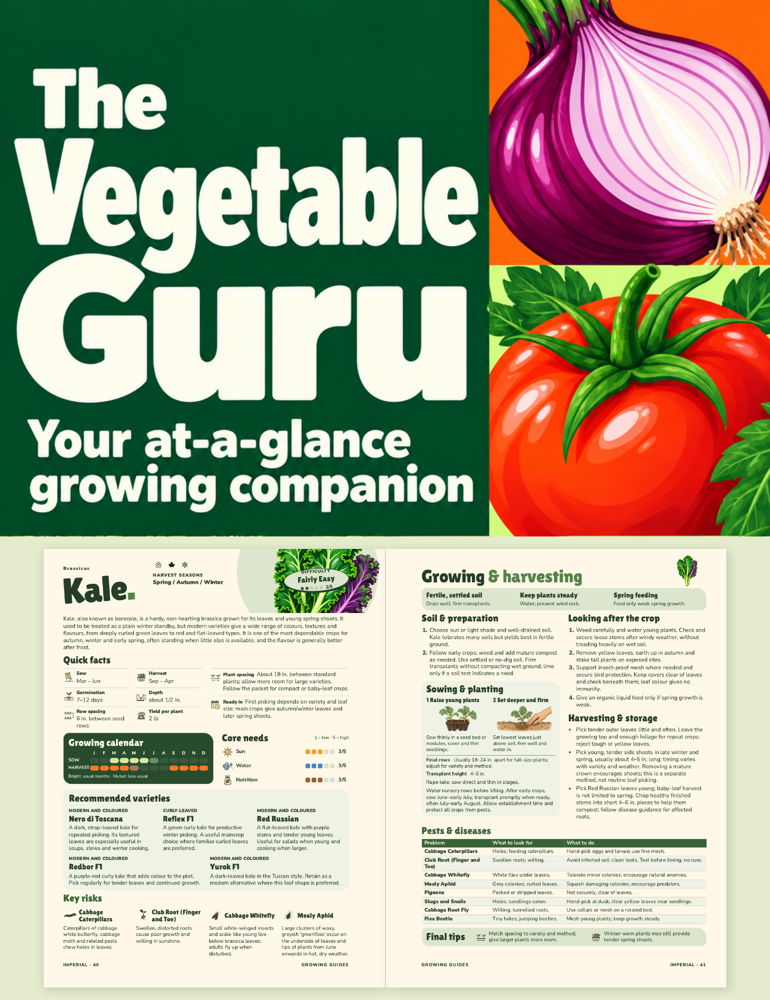

G1 · Full grid

Closest to the preferred sketch: a deep-green title panel and larger vegetable tiles continuing to the bottom edge.
Your at-a-glance growing companion
Closest to the preferred sketch: a deep-green title panel and larger vegetable tiles continuing to the bottom edge.

A wide cream title panel between two rows of vegetables. More room for the title, with a lighter overall balance.

The green title grid above the actual two-page Kale spread, showing the calendars, quick facts, planting and practical advice inside.
Click any cover for a full-size view. G1 keeps the illustration-led direction, G2 changes the title hierarchy, and G3 makes the book’s contents part of the cover.
G3 uses the existing Bookvault Kale proof, pages 1–2 (folios 40–41). Those page images were placed directly in the layout. The interiors were not altered or regenerated. G2 is the selected front-cover direction. G1/G3 remain alternatives; final production artwork and wrap are pending.